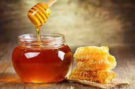
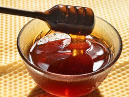
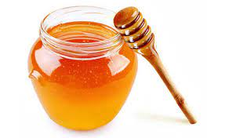

-
Mel Silvestre
Valor R$ 45,00 Descrição
O mel silvestre é extraído de uma variedade imensa de flores. Como é proveniente de diversas fontes, é impossível definir qual sabor predomina mais, aí recebeu esse nome. É um dos mais populares e consumidos em todo o Brasil. Afinal, é mais acessível para produção e venda.
-
Mel Eucalípto
Valor R$ 45,00 Descrição
Com cor mais escura e um sabor de mel marcante, o Mel de Eucalipto é um ótimo aliado contra gripes e resfriados, pois possui propriedades expectorantes. Ajuda a dilatar os brônquios, melhorando a respiração e aliviando sintomas de gripes e resfriados, auxiliando no alívio da tosse também.
-
Mel Capixingui
Valor R$ 45,00 Descrição
O mel capixingui é um exemplo de mel monofloral de excelente qualidade, possui coloração âmbar claro, com sabor agradável e característico, e cristalização rápida e uniforme.